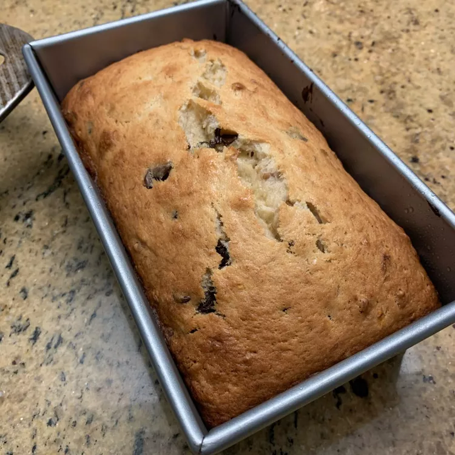

Chocolate Chip Banana Bread

Description
This chocolate chip banana bread recipe makes two really moist, rich loaves. Great for breakfast or warm with butter as a dessert. The walnuts may be omitted if desired.
Ingredients
- 1 cup shortening
- 2 cups white sugar
- 2 eggs
- 2 tablespoons mayonnaise
- 6 very ripe bananas, mashed
- 3 cups all-purpose flour
- 1/2 teaspoon salt
- 1 teaspoon baking powder
- 2 teaspoons baking soda
- 1 cup semi-sweet chocolate chips
- 1/2 cup chopped walnuts
Steps
- Preheat the oven to 350 degrees F (175 degrees C). Lightly grease two 9x5-inch loaf pans.
- In a large bowl, cream together shortening and sugar until light and fluffy. Stir in eggs one at a time, beating well with each addition. Stir in mayonnaise and bananas. Stir together flour, salt, baking powder, and baking soda. Blend flour mixture into banana mixture; stir just enough to evenly combine. Fold in chocolate chips and walnuts.
- Bake in the preheated oven until a toothpick inserted into the center of a loaf comes out clean, about 50 to 75 minutes. Cool loaves in the pans for 20 minutes before removing to a wire rack to cool completely.